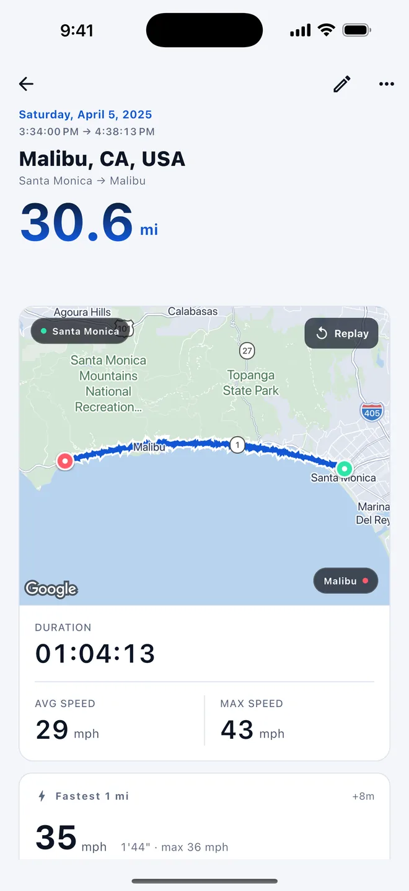
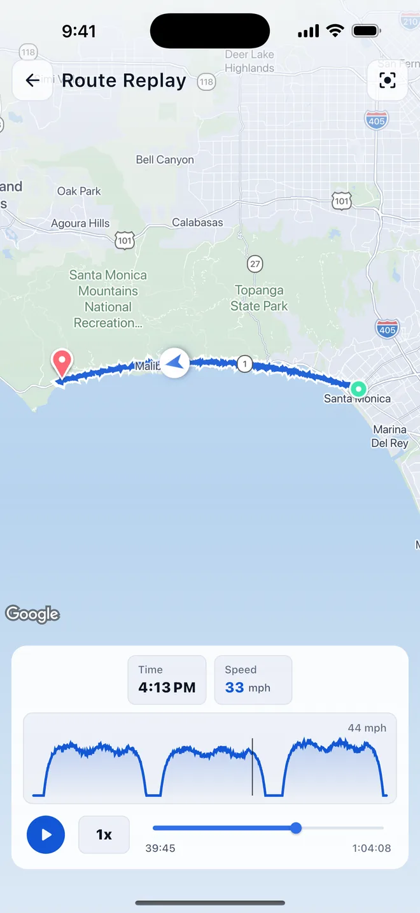

한눈에 보기
대부분의 사람이 가장 먼저 궁금해하는 네 가지입니다. 세부 내용과 출처는 아래 전체 비교표에 있습니다.
| 앱 | 계정 불필요 | 기록이 폰에 남음 | 자동 기록 | 무료 |
|---|---|---|---|---|
| DashLog | ✓예 | ✓예 | ✓예 | ✓예 |
| myTracks | ✓예 | ✓예 | 하루 단위 트랙 | 일부 |
| Driving Tracker | ✓예 | ✓예 | Premium | 일부 |
| Geo Tracker | –언급 없음 | ✓예 | ✗아니요 | ✓예 |
| Google 지도 타임라인 | ✗아니요 | 기본 설정 | ✓예 | ✓예 |
| Apple 지도 방문한 장소 | –언급 없음 | 암호화 동기화 | 장소만 | ✓예 |
| Enroad | 선택 | 설정 시 | ✓예 | 일부 |
| Wheelz | ✗아니요 | ✗아니요 | ✓예 | 일부 |
| MileIQ | ✗아니요 | ✗아니요 | ✓예 | 월 40회 주행 |
| Driversnote | ✗아니요 | ✗아니요 | ✓예 | 월 15회 이동 |
✓ 예 · ✗ 아니요 · – 개발사 언급 없음
전체 비교표
같은 앱 10종을 각 답의 근거와 함께 정리했습니다. 가격은 미국 App Store, Google Play 또는 개발사 기준 가격이며, 개발사가 밝히지 않은 항목은 언급 없음으로 표시했습니다.
표를 옆으로 밀면 모든 열을 볼 수 있습니다 →
개발사가 설명하는 주행 기록 앱, 2026년 11월 26일 확인. 위 첨자 숫자는 출처로 연결됩니다.
| 앱 | 주행 기록 보관 위치 | 계정 필요? | 가격 방식 | 플랫폼 | 자동으로 기록? | 내보내기 | 무료 범위 |
|---|---|---|---|---|---|---|---|
| 기록이 폰에 남고 계정 불필요 | |||||||
| DashLogGrayForge (이 사이트) | 기기 안. DashLog 서버는 경로를 받지 않으며, 앱 분석과 크래시 보고에도 경로는 포함되지 않습니다.12 | 아니요.13 | 무료, 구독 없음.1 | iPhone (iOS 16.2+)과 Apple Watch 앱, Android와 Wear OS34 | 한 번 설정하면 폰이 CarPlay나 차량 블루투스에 연결될 때 예. 버튼 한 번으로 시작할 수도 있음.13 | 주행 하나 또는 기간 전체를 GPX나 CSV로. GPX 가져오기.13 | 전부: 자동 기록, 경로 다시 보기, 통계, 내보내기.13 |
| myTracksDirk Stichling | 기기 안, iCloud로 Apple 기기 간 동기화. 개인정보 보호 라벨: 데이터가 수집되지 않음.5 | 아니요.5 | 무료, 선택형 Premium. 스토어 정보에 가격 표시 없음.5 | iPhone, iPad, Apple Watch (iOS 18.6+), Mac과 iCloud 동기화5 | 다이어리 모드가 백그라운드에서 하루에 트랙 하나를 기록하며, 주행별로 나누지 않음.5 | GPX, KML, KMZ, ZIP5 | 어떤 기능이 Premium인지 언급 없음.5 |
| Driving Tracker: GPS Trip LogRichard Bláha | 기기 안, “계정도 클라우드도 없음”. 데이터 보안 섹션에는 금융 정보, 앱 활동, 앱 성능 데이터가 표시됨.67 | 아니요.67 | 무료, Premium 월간 또는 연간 구독(7일 체험). 가격 표시 없음.6 | Android67 | Premium만. 무료 버전은 버튼으로 시작하고 멈춤.6 | Premium: GPX 또는 ZIP 백업6 | 수동 기록, 지도, 속도·센서 차트, 카테고리 2개.6 |
| Geo TrackerIlya Bogdanovich | 기기 안. 트랙은 “어떤 서버로도 전송되지 않음”.8 | 언급 없음8 | 무료, 앱 안에서 선택적 후원.8 | Android8 | 아니요. 직접 기록을 시작하면 백그라운드에서 계속 기록.8 | GPX, KML, KMZ8 | 무료, 광고 없음, 후원으로 운영.8 |
| 폰의 지도 앱에 내장 | |||||||
| Google 지도 타임라인Google | 로그인한 각 기기, Google 서버에 암호화된 백업 선택 가능.9 | 예, Google 계정. 타임라인은 직접 켜기 전까지 꺼져 있음.9 | 무료9 | Android, iPhone, iPad의 Google 지도910 | 예: 방문한 곳과 경로, 이동 수단(걷기, 자전거, 운전, 대중교통)까지.9 | JSON 파일(location-history.json)910 | 전부. 속도와 주행 통계에 대한 설명은 없음.9 |
| Apple 지도 방문한 장소Apple | 종단간 암호화, Apple도 읽을 수 없으며 기기 간 동기화.11 | 언급 없음11 | 무료, iOS에 포함11 | iPhone (iOS 26 이상), 일부 국가 또는 지역에서는 제공되지 않음11 | 방문한 장소를 저장. 경로와 주행에 대한 언급은 없음.11 | 내보내기 설명 없음. 장소 하나씩 공유 가능.11 | 전부11 |
| 소셜 주행 기록 앱 | |||||||
| Enroad – Drive Tracker11X Studio | 폰에 저장되고 클라우드 백업에 미러링, “Keep Everything on This Device”(모든 데이터를 이 기기에 보관)를 켜지 않는 한. 개인정보 보호 라벨에는 사용자를 추적하는 데 쓰이는 식별자와 사용 데이터가 표시됨.1214 | 선택. 리더보드에는 계정을 쓰며, 처리방침에는 계정 없이 쓰는 경우도 언급됨.16 | 무료, Pro 연 $23.99 또는 월 $9.99.15 | iPhone (iOS 15+), Android1213 | 예, 백그라운드에서 주행을 감지.14 | 언급 없음. 계정 데이터 사본을 JSON으로 요청 가능.16 | 모든 주행 기록. Ride Replay, 고급 주행 통계, 도시·국가·전 세계 리더보드는 Pro.1415 |
| WheelzVortac Labs | 계정에 연결: 처리방침에 저장된 주행과 정밀 위치가 명시되어 있으며, 클라우드 업체에 보관됨.19 | 예, 계정 필요. Apple 또는 Google로 로그인.19 | 무료, Pro 주 $4.99, 월 $9.99, 연 $49.99.17 | iPhone (iOS 18+), Android1718 | 예, 움직이기 시작하면 이동 기록 시작.1718 | 언급 없음17 | Pro는 무제한 주행 기록을 포함한 모든 기능을 엶. 무료 한도는 언급 없음.17 |
| 세금·경비 정산용 주행 거리 기록 앱 | |||||||
| MileIQMileIQ Inc. | MileIQ 클라우드, 웹 대시보드 제공.2123 | 예, 이메일과 비밀번호, 이메일 인증.23 | 무료 플랜, Unlimited 월 $13.99 또는 연간 결제 시 월 $11.66.22 | iPhone (iOS 16+), Android, 웹2023 | 예, 백그라운드에서.2021 | IRS(미국 국세청) 기준 주행 거리 보고서2021 | 월 40회 주행22 |
| DriversnoteDriversnote ApS | Driversnote 계정에 “안전하게 저장”, 웹에서도 볼 수 있음.2426 | 예. 무료 플랜도 가입부터 시작.26 | 무료 플랜, Pro 월 $11(세금 별도). 웹에서 연간 플랜 구매 시 iBeacon 무료.26 | iPhone (iOS 16.4+), Android, 웹2426 | 예, 일정 속도에 도달하면. 선택형 iBeacon으로 차량 한 대로 한정 가능.2425 | PDF·Excel 운행 기록부, IRS 기준 보고서25 | 월 15회 이동, 보고서 포함26 |
스토어 정보는 자주 바뀝니다. App Store의 앱 개인정보 보호 라벨과 Google Play의 데이터 보안 섹션은 개발자가 직접 작성하며, Apple은 자사 라벨이 검증된 것이 아니라고 밝히고 있습니다.
확인 방법
GrayForge는 DashLog를 만든 곳이므로, 이 점을 감안해 읽어 주세요. 다른 앱에 대한 모든 사실은 2026년 11월 26일에 확인한 해당 앱의 미국 App Store·Google Play 정보, 웹사이트, 개인정보 처리방침, 도움말 페이지에서 가져왔으며, 리뷰 사이트나 사용자 리뷰는 쓰지 않았습니다. 같은 경로를 모든 앱으로 달려 보지는 않았으므로, 정확도나 배터리 사용량으로 순위를 매기지 않았습니다.
DashLog가 주행에서 남기는 것
각 주행은 경로, 시간, 속도와 함께 폰에 저장됩니다. 구간별 속도와 함께 다시 재생할 수 있고, 주행 하나나 기간 전체를 CSV나 GPX로 내보낼 수 있습니다.13



표에 담지 못한 내용
- DashLog는 자동차 이동뿐 아니라 오토바이 라이딩과 자전거 경로도 기록합니다. iPhone에서는 주행마다 GPX 파일을 원하는 폴더에 저장할 수 있고, Apple Watch와 Wear OS 앱으로 손목에서 주행을 시작하고 끝낼 수 있습니다.34 한 번만 하면 되는 설정은 자동 기록 가이드에서 안내합니다.
- myTracks는 운전만이 아니라 모든 이동을 위한 앱으로, 웨이포인트, 트랙에 연결된 사진, 오프라인 OpenStreetMap 지도를 지원합니다.5
- Driving Tracker는 폰의 모션 센서를 활용해 주행마다 G-포스 수치와 급제동, 급가속, 급회전 이벤트를 기록합니다.6
- Geo Tracker는 다운로드 1,000만 회 이상이며, 운전만큼 야외 활동에도 맞춰져 있습니다. 내비게이션 모드에서는 진행 방향에 맞춰 지도가 회전합니다.8
- Google 지도 타임라인은 “그날 어디 있었지?”에 가장 빨리 답해 주며, 장소·도시·세계 탭으로 다녀온 곳을 보여 줍니다. 수정하거나 원하는 부분을 삭제할 수 있습니다.910
- Apple 지도 방문한 장소는 이름, 카테고리, 주소, 메모로 지난 방문을 검색할 수 있고, 보관 기간도 고를 수 있습니다.11
- Enroad는 App Store 평가 6.7천 개, Google Play 리뷰 2.5만 개를 보유하고 있으며, 주행 통계에 더해 공유 카드, 클럽, 영역 게임을 제공합니다.121314
- Wheelz는 내 차들을 모아 두는 차고 기능이 있고, 리더보드에서 다른 운전자와 순위를 겨룹니다.1718
- MileIQ에서는 보고서에 들어가기 전에 주행마다 밀어서 업무용·개인용으로 분류합니다.20
- Driversnote에는 이동 기록을 편집하는 웹 앱과, 관리자가 주행 거리 청구를 승인하는 Teams 플랜이 있습니다.25
함께 볼 만한 앱: 모든 주행을 기록하고 CarPlay와 연동되며 달려 본 모든 도로를 지도에 표시하는 Open Road(커뮤니티 기능은 Pro)2728, 인앱 구매가 없고 데이터를 수집하지 않는 무료 iPhone 앱 Open GPX Tracker29, 무료 오픈소스 오프라인 Android 앱인 BasicAirData의 GPS Logger30, 그리고 블루투스 기기가 연결되면 이동 기록을 시작하고 보고서를 구독으로 판매하는 Android 앱 Vehicle Trip Logbook Tracker31가 있습니다.
언제 무엇을 쓸까
- 가입할 필요 없이 모든 주행이 저절로 기록되길 원한다면. DashLog는 폰이 CarPlay나 차량 블루투스에 연결될 때마다 주행을 무료로, 계정 없이 기록합니다. Android에서는 Driving Tracker도 Premium으로 가능합니다.
- 주행 통계가 아니라 다녀온 곳을 보고 싶다면. 이미 폰에 있는 Google 지도 타임라인이나 Apple 지도 방문한 장소를 쓰세요.
- 다른 앱에서 쓸 경로 파일이 필요하다면. DashLog, myTracks, Geo Tracker, Open GPX Tracker, GPS Logger 모두 GPX로 내보냅니다. DashLog는 주행 하나 또는 한 달 전체를 한 번에 내보낼 수 있고, iPhone에서는 주행마다 파일을 폴더에 자동 저장할 수 있습니다.
- 운전뿐 아니라 라이딩도 한다면. DashLog는 오토바이 라이딩과 자전거 경로를 자동차 이동과 똑같이 기록하고, myTracks와 Geo Tracker는 모든 종류의 이동에 맞춰져 있습니다.
- 친구와 주행을 비교하고 싶다면. Enroad, Wheelz, Open Road에는 리더보드, 친구, 클럽 기능이 있으며 계정을 사용합니다.
- 세금이나 경비 정산용 주행 거리 기록이 필요하다면. MileIQ와 Driversnote는 업무용·개인용 이동을 분류하고 IRS 기준 보고서를 만듭니다. 바로 그 용도로 만든 앱입니다.
주행 기록이 어디로 가는지 확인하기
위치 기록은 가장 개인적인 데이터에 속하며, 스토어 설명은 앱을 파는 사람이 씁니다. 저희 앱도 마찬가지입니다.
- 첫 주행 전에 로그인 화면이 나온다면 주행 기록이 계정에 연결된다는 뜻입니다. 개인정보 처리방침에 기록이 어디에 보관되고 어떻게 삭제하는지 나와 있어야 합니다.
- 개인정보 섹션에서(App Store의 앱 개인정보 보호, Google Play의 데이터 보안) 위치가 “사용자에게 연결된 데이터”나 “사용자를 추적하는 데 사용되는 데이터”에 있는지 확인하세요.
- 주행 하나를 내보내 보세요. GPX나 CSV 파일은 앱이 어떻게 되든 내가 가지고 있는 사본입니다.
자주 묻는 질문
계정 없이 쓸 수 있는 주행 기록 앱은 무엇인가요?
iPhone과 Android의 DashLog, iPhone의 myTracks, Android의 Driving Tracker는 계정이 필요 없고 주행 기록을 폰에 보관한다고 밝히고 있으며, Android의 Geo Tracker는 트랙이 서버로 가지 않는다고 설명합니다. Enroad는 계정 없이도 쓸 수 있지만 리더보드에는 계정을 씁니다. Wheelz, MileIQ, Driversnote는 계정을 사용합니다.
모든 주행을 자동으로 기록하는 무료 앱이 있나요?
DashLog는 무료이며, 폰이 CarPlay나 차량 블루투스에 연결되면 계정 없이 저절로 기록을 시작합니다. Enroad도 모든 주행을 무료로 기록하며, 다시 보기와 고급 통계는 Pro입니다. MileIQ는 월 40회 주행, Driversnote는 월 15회 이동까지 무료입니다.
Google 지도 타임라인은 주행을 기록하나요?
Google 계정으로 켜면 타임라인이 방문한 곳과 경로를 저장하고, 운전을 포함해 어떤 방법으로 이동했는지 보여 줍니다. 암호화된 백업을 켜지 않으면 각 기기에 저장되며, JSON 파일로 내보낼 수 있습니다. Google 도움말에는 속도나 주행별 통계에 대한 설명이 없습니다.
DashLog는 무료인가요?
네. DashLog는 현재 구독도 계정도 없이 무료로 다운로드하고 사용할 수 있습니다. 자동 기록, 경로 다시 보기, 통계, GPX·CSV 내보내기가 모두 포함됩니다.
출처
모든 페이지는 2026년 11월 26일에 확인했습니다. 가격은 그날 해당 페이지에 표시된 미국 가격입니다.
- DashLog product page (GrayForge) · https://grayforge.app/dashlog/한 번 설정 후 CarPlay·차량 블루투스로 자동 기록, 계정 없음, 구독 없는 무료, 기록 항목, 기기 내 저장, GPX·CSV 내보내기와 GPX 가져오기. 2026-11-26 확인.
- DashLog privacy policy (GrayForge) · https://grayforge.app/dashlog/privacy_policy.html주행 기록은 기기에 저장, 경로를 받는 DashLog 서버 없음, 정밀 경로가 포함되지 않는 Firebase 분석·크래시 보고·원격 구성. 2026-11-26 확인.
- DashLog GPS Drive Tracker, App Store (US) · https://apps.apple.com/us/app/id6769706684자동차·오토바이·자전거 기록, CarPlay·블루투스 자동 기록, 다시 보기, 내보내기와 가져오기, Apple Watch 앱, 폴더에 GPX 자동 저장(버전 1.4.7), iOS 16.2 요구 사항, 개인정보 보호 라벨(사용 데이터와 진단, 사용자와 연결되지 않음). 2026-11-26 확인.
- DashLog GPS Drive Tracker, Google Play (US) · https://play.google.com/store/apps/details?id=com.grayforge.dashlog블루투스 자동 기록, Wear OS 워치 앱, 내보내기와 가져오기, 계정 없음. 2026-11-26 확인.
- myTracks - The GPS-Logger, App Store (US) · https://apps.apple.com/us/app/id358697908계정 없음, iCloud 동기화와 함께 기기에 데이터 저장, 다이어리 모드, 내보내기 형식, 선택형 Premium, iOS 18.6 요구 사항, 데이터가 수집되지 않음 라벨. 2026-11-26 확인.
- Driving Tracker: GPS Trip Log, Google Play (US) · https://play.google.com/store/apps/details?id=com.richardblaha.drivingtracker가입 없음, 기기 내 오프라인 저장, 센서 데이터, Premium 기능(자동 이동 감지, 히트맵, GPX·ZIP 내보내기, 카테고리), 구독 플랜, 데이터 보안 섹션. 2026-11-26 확인.
- DrivingTracker website · https://drivingtrackerapp.com/“계정도 클라우드도 없음”, 주행 기록은 서버에 업로드되지 않음, Android 앱. 2026-11-26 확인.
- Geo Tracker - GPS tracker, Google Play (US) · https://play.google.com/store/apps/details?id=com.ilyabogdanovich.geotracker백그라운드 기록, 통계, 내비게이션 모드, GPX·KML·KMZ, 트랙은 기기에 저장되고 서버로 전송되지 않음, 자발적 후원, 다운로드 1,000만 회 이상. 2026-11-26 확인.
- Manage your Google Maps Timeline (Android), Google Maps Help · https://support.google.com/maps/answer/6258979로그인한 각 기기에 타임라인 저장, 기본값은 꺼짐, 기기별 암호화 백업, 이동 수단, 타임라인 데이터 내보내기. 2026-11-26 확인.
- Manage your Google Maps Timeline (iPhone & iPad), Google Maps Help · https://support.google.com/maps/answer/6258979iOS용 Google 지도에서 타임라인 켜기, location-history.json으로 내보내기. 2026-11-26 확인.
- View Visited Places in Maps on iPhone, Apple Support · https://support.apple.com/guide/iphone/view-and-manage-visited-places-iph0c2597c4f/ios종단간 암호화된 방문 기록, 기기 간 동기화, 검색과 필터, 방문 기록 보관 기간과 기록 지우기, 지역별 제공 여부, iOS 26·iOS 27 설명서. 2026-11-26 확인.
- Enroad – Drive Tracker, App Store (US) · https://apps.apple.com/us/app/id6757245082자동 이동 기록, 고급 통계용 Pro 구독, iOS 15 요구 사항, iPhone 전용, 앱 개인정보 보호 라벨(사용자를 추적하는 데 쓰이는 식별자와 사용 데이터), 평가. 2026-11-26 확인.
- Enroad - Drive Tracker, Google Play (US) · https://play.google.com/store/apps/details?id=io.uros.triprankAndroid 스토어 정보, 인앱 구매, 데이터 보안 섹션. 2026-11-26 확인.
- Enroad website · https://enroad.app/백그라운드 주행 감지, 이동 기록은 폰에 파일로 저장되고 클라우드 백업에 미러링, “Keep Everything on This Device” 설정, 무료 기록, Pro에 포함되는 리더보드와 기능. 2026-11-26 확인.
- Enroad pricing · https://enroad.app/pricingPro 연 $23.99 또는 월 $9.99와 포함 내용. 2026-11-26 확인.
- Enroad privacy policy · https://enroad.app/privacy로그인과 리더보드용 계정 데이터, 백업된 주행과 GPS 경로, 계정 없이 사용, JSON 데이터 사본. 2026-11-26 확인.
- Wheelz - Social Drive Tracker, App Store (US) · https://apps.apple.com/us/app/id6774287184자동 이동 감지, 구독 가격, Pro의 무제한 기록, iOS 18 요구 사항. 2026-11-26 확인.
- Wheelz - Social Drive Tracker, Google Play (US) · https://play.google.com/store/apps/details?id=com.gigamow.wheelzAndroid 스토어 정보, 자동 기록, 리더보드, 데이터 보안 섹션. 2026-11-26 확인.
- Wheelz privacy policy (Vortac Labs) · https://vortac.io/wheelz/privacy계정 정보와 Apple·Google 로그인, 저장된 주행, 정밀 위치, 클라우드 인프라 업체, 보관 기간. 2026-11-26 확인.
- MileIQ: Mileage Tracker & Log, App Store (US) · https://apps.apple.com/us/app/id578830929백그라운드 자동 기록, 업무용·개인용 분류, IRS 기준 보고서, iOS 16 요구 사항. 2026-11-26 확인.
- Mileage Tracker & Log - MileIQ, Google Play (US) · https://play.google.com/store/apps/details?id=com.mobiledatalabs.mileiqGPS 자동 기록, IRS 기준 보고서, 안전한 클라우드 저장, 월 40회 주행 무료. 2026-11-26 확인.
- MileIQ pricing · https://mileiq.com/pricing월 40회 주행 무료 플랜, Unlimited 월 $13.99 또는 연간 결제 시 월 $11.66. 2026-11-26 확인.
- Installing MileIQ and account signup, MileIQ Help · https://support.mileiq.com/hc/en-us/articles/204237125-Installing-MileIQ-and-account-signup이메일·비밀번호 계정, 이메일 인증, 웹 대시보드, 폰 앱 로그인. 2026-11-26 확인.
- Mileage Tracker by Driversnote, App Store (US) · https://apps.apple.com/us/app/id924418916일정 속도 도달 시 자동 기록, 카테고리, IRS 기준 기록부, 안전한 기록 저장, iOS 16.4 요구 사항. 2026-11-26 확인.
- Mileage Tracker by Driversnote, Google Play (US) · https://play.google.com/store/apps/details?id=com.driversnote.driversnotePDF·Excel 운행 기록부 내보내기, 웹 앱, iBeacon, IRS 기준 보고서. 2026-11-26 확인.
- Driversnote pricing · https://www.driversnote.com/pricing무료 플랜(가입, 월 15회 이동), Pro 월 11 USD(세금 별도), 웹에서 연간 플랜 구매 시 iBeacon 무료, iOS·Android·웹. 2026-11-26 확인.
- Open Road: Drive Tracker GPS, App Store (US) · https://apps.apple.com/us/app/id6755834573모든 주행 기록, CarPlay, 달린 도로 지도, 친구와 컨보이, Pro 기능, 주행 저장과 동기화, iOS 18 요구 사항. 2026-11-26 확인.
- Open Road: Drive Tracker, Google Play (US) · https://play.google.com/store/apps/details?id=com.mikita.openroadAndroid 스토어 정보, 주행 기록, 기본 비공개 공유. 2026-11-26 확인.
- Open GPX Tracker, App Store (US) · https://apps.apple.com/us/app/id984503772무료, 광고 없음, 인앱 구매 없음, 데이터는 폰에 비공개로 보관, GPX 공유. 2026-11-26 확인.
- GPS Logger (BasicAirData), Google Play (US) · https://play.google.com/store/apps/details?id=eu.basicairdata.graziano.gpslogger무료 오픈소스, 오프라인 기록, KML·GPX·TXT 내보내기, 데이터 수집 없음. 2026-11-26 확인.
- Vehicle Trip Logbook Tracker, Google Play (US) · https://play.google.com/store/apps/details?id=ee.prey.triplog블루투스 연결·해제 시 이동 자동 시작·일시 정지·재개, 6개월마다 결제하는 구독으로 PDF·XLS·CSV 보고서. 2026-11-26 확인.
DashLog — GPS 운행 기록 앱
폰이 CarPlay나 차량 블루투스에 연결되면 모든 주행을 저절로 기록합니다. 경로, 거리, 속도, 통계가 기기 안에 남습니다. 무료이며 계정도 구독도 없습니다.
알려 주시면 표를 고치겠습니다.
스토어 정보는 바뀝니다. 위의 가격, 플랫폼, 제한 중 DashLog에 관한 것을 포함해 오래된 내용이 있다면 링크와 함께 알려 주세요. 표를 바로잡겠습니다.
grayforge.dev@gmail.com